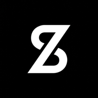
ZeroA frog on a mushroom, a prickly cactus, a coffee mug that says first things first. Clear symbol charts, a DMC thread list and a colour guide for every design. Made for beginners.
Get the 12 patterns · ₹199₹199 (about $2.40)
Instant download after payment. Pay with your email on our SuperProfile store. We don't do refund & return ✌️
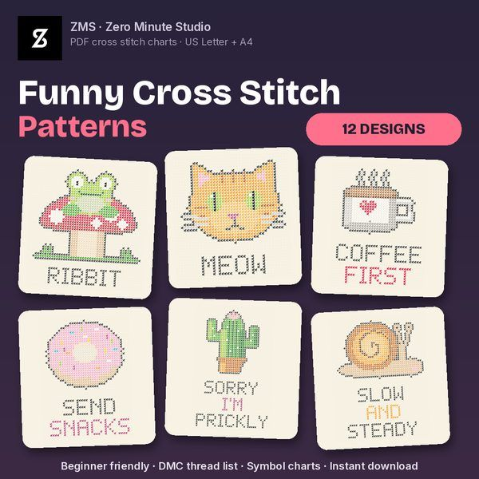
Stitched previews of every pattern in the set.
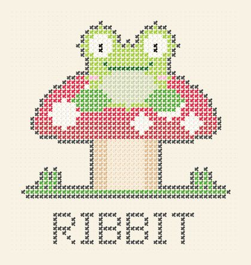
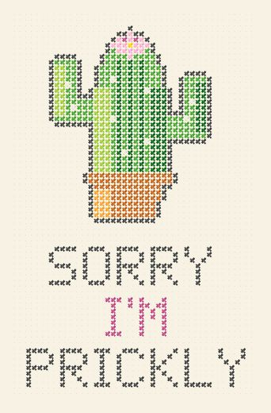
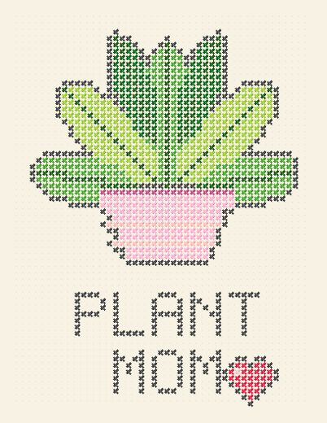
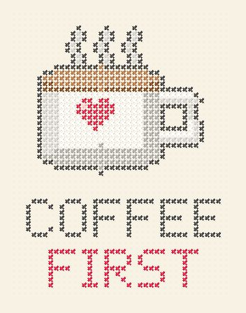
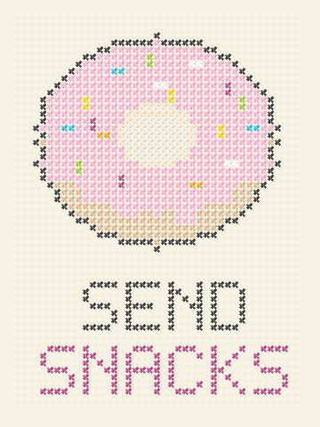
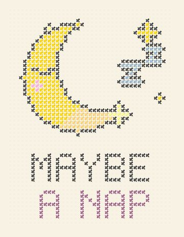
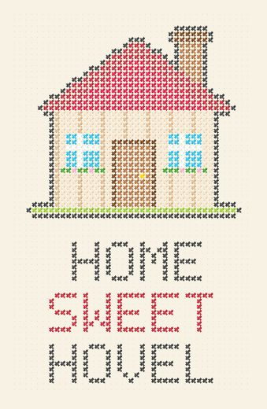
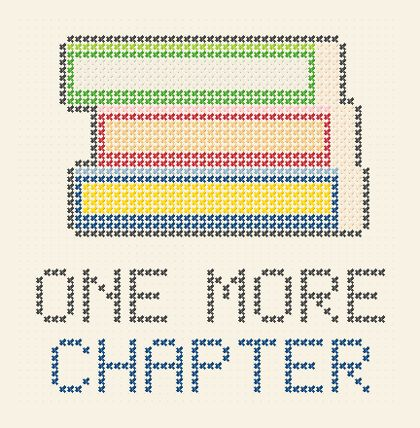
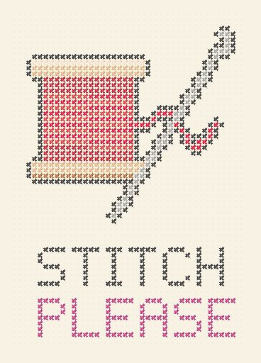
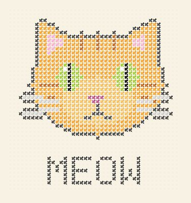
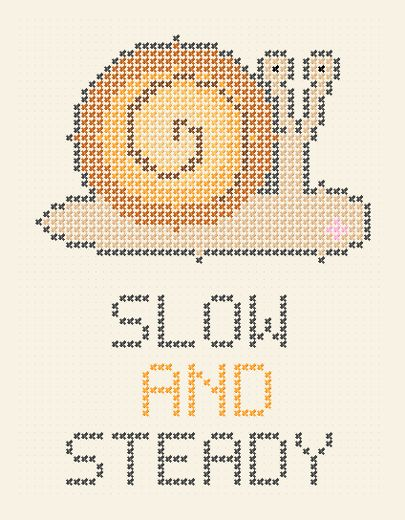
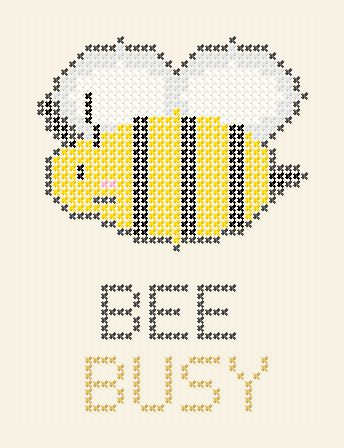
Small, quick projects about 38 to 50 stitches wide with 7 to 13 colours each. No half stitches, no backstitch.
Large squares with bold lines every 10 and centre arrows, so you never lose your place. Tinted squares match the thread colours.
DMC numbers and names, exact stitch counts and skein estimates for every colour.
Sizes shown for 11, 14, 16 and 18-count Aida in inches and centimetres.
What you need, how to read a chart, how to make a cross stitch, finishing ideas and an FAQ.
Print-ready PDFs for both paper sizes, plus a stitched preview PNG of every design.
Real pages from the set (Home Sweet Hovel and the Start Here guide).
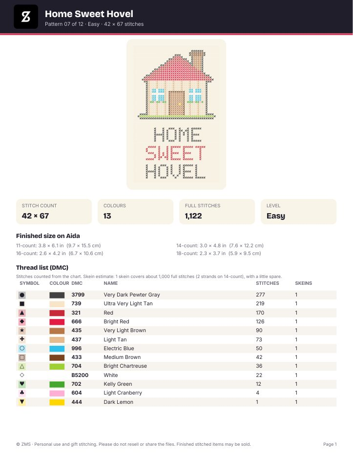
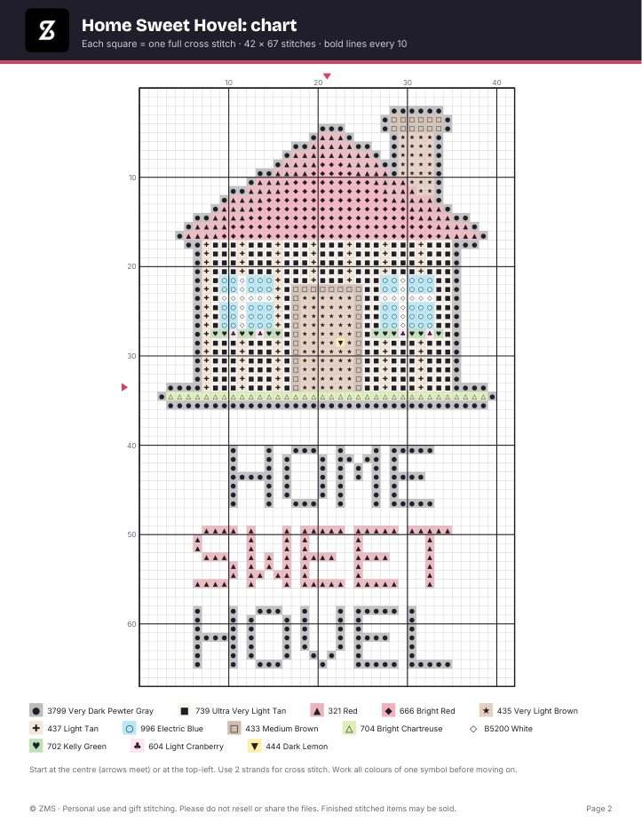
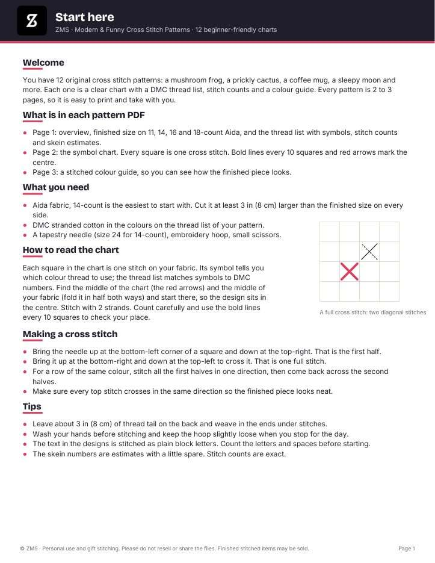
First-time stitchers, relaxed evening projects, quick gifts, hoop art, housewarming and birthday presents, and stitch clubs.
PDF charts for printing or a tablet. Not PatternKeeper or app files. No fabric, thread or needles are included. You may sell your finished stitched pieces.
Check out on our SuperProfile store with your email. No account needed.
You get one ZIP right after payment with US Letter and A4 folders.
Pick a design, match the DMC colours, and start from the centre.
Yes. Each design is small, about 38 to 50 stitches wide, with 7 to 13 colours. There are no half stitches or backstitch, and the Start Here guide explains how to read a chart and how to make a cross stitch.
Aida fabric (14-count is the easiest to start with) and DMC stranded cotton in the colours on each thread list. The overview page of every pattern shows the finished size on 11, 14, 16 and 18-count Aida.
No. These are PDF charts for printing or viewing on a tablet. They are not PatternKeeper or other app files.
The numbers are DMC. Colours on screen and paper are approximate, so match them to your thread card. Skein numbers are estimates with a little spare; stitch counts are exact.
Both US Letter and A4, in separate folders. Print at Actual size (100%), not Fit to page.
Yes, you can sell finished stitched pieces. Please do not resell or share the pattern files themselves.
Check out on our SuperProfile store with your email (a phone number is also asked at checkout). You get one ZIP file right after payment. No account needed.
Get the 12 patterns · ₹199 (about $2.40)
Secure checkout on our SuperProfile store. We don't do refund & return ✌️